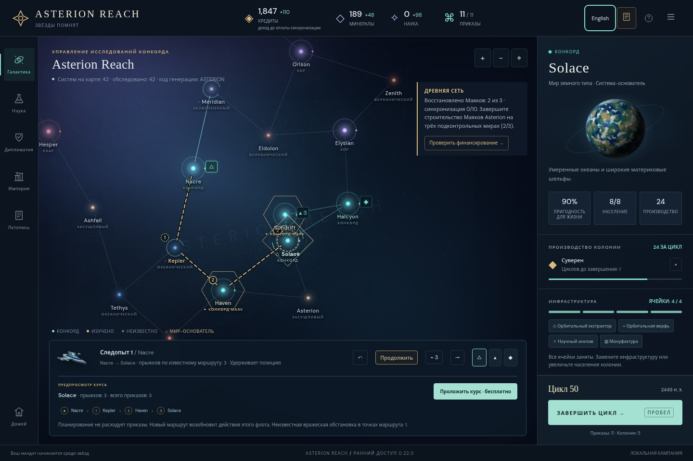
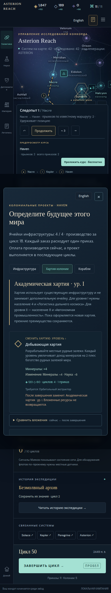
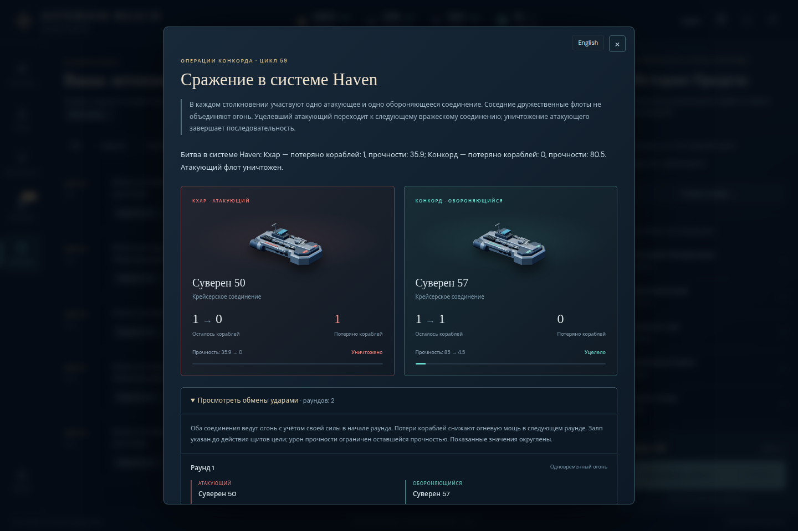
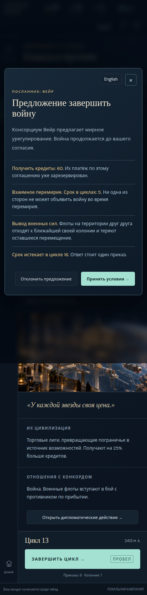

Candidate 2 Russian audit
Rendered text and tested functional behavior pass. One Diplomacy ARIA suffix remains.
Report · Remaining issue · Attribution checks · Asset pins
Independent Russian regression audit — candidate 2
The full repeat passes the tested language/state behavior and all previously recorded rendered-English failures. One accessible-name suffix remains: the Diplomacy aside says “Дипломатия context”. This is the only unexpected Latin found in the captured text/attribute inventory after the documented proper-name exclusions.
Candidate: v0.22.0, commit 727faaa98a55694edf3fde2e7172d1afef2b9631. Immutable URL: http://127.0.0.1:41189. Build: 2026-10-29T13:44:27.254Z. JS SHA256 525846b31607ad15129b835c1ddf1713d21f3cabe0b2dd7fcd6176bae586d7e9. CSS SHA256 ff380d739363d1d4e77229308ea775b49f07e93690467ad55ae3fccc0dfce01a. Metadata and served assets matched before/after the audit. Source fixtures use the extracted pinned commit.
Scope
Repeated the six initial/default50/finished60 contexts at 1440×960 and 390×960, four synthetic pending-offer cases created through normal diplomacy commands, configured-dialog English/Russian/English round trips, and four literal seed cases. Fifty-four primary language activations preserved exact full state and focused control. Selected replacement, expanded details, charter tab, dialog nodes, exports/imports and Russian reload preference passed. Offer acceptance matched complete normal-command outcomes. The docs remained English. No primary browser page errors or measured document/modal horizontal overflow appeared.
Previous failed-candidate deltas
All 32 prior rendered English/mixed lines are resolved in the repeated passages: map/menu counts, funding result, replacement warning, ship upkeep, dispatch counts, battle casualty clauses, research completion/effects, anomaly history prefixes and conclusion ranges. The previous 39 attribute variants are also resolved in the sampled map labels, research prerequisites and sort tooltips. One new/remaining attribute family is reported below.
Battle attribution was additionally checked against the canonical English records, independently of the translator: all five recorded casualty clauses retain their correct factions, ship losses and decimal hull losses at both widths. The ten checks are in attribution-checks.json. War target/faction boundaries and the treaty-betrayal suffix remain correctly separated in the inspected actual Chronicle. Peace withdrawal still correctly describes returning to the nearest owned colony and losing remaining movement. There is no observed recurrence of the earlier name-swallowing defect.
Remaining finding C2-R1
Severity: low; confidence: high. In every sampled Diplomacy view, the aside aria-label is “Дипломатия context”. Reproduce by switching to Russian and opening Diplomacy in the initial, actual50 or finished60 campaign at either width. The visible page text is Russian; the accessible context label retains one English word. Expected: a wholly Russian label such as “Контекст дипломатии”. Evidence: remaining-English.json and text/*-diplomacy-latin.json. This report does not silently classify the label as translated.
Result
Observed functional behavior and main rendered-text coverage pass. Accessible-name completion has this one outstanding suffix. Root requested a separately frozen focused follow-up; that work belongs in its own candidate3 directory. Candidate2 evidence and previous failed-candidate directories remain unchanged. No source edits or repository packaging were performed by this reviewer.
Evidence
primary-results.json; supplement-results.json; roundtrip-results.json; seed-protection-results.json; remaining-English.json; attribution-checks.json; serving-build-before/after.json; reviewed-source-manifest.sha256; text/ and screens/. The selected gallery is illustrative; the result files specify the tested scope. This audit does not establish all possible event branches or screen-reader behavior.
Representative browser evidence

Corrected Russian map metadata and routes
Russian charter and effect choices at 390px
Correct Russian casualty attribution and battle roles
Russian peace terms and withdrawalTranslated conclusion and retained history